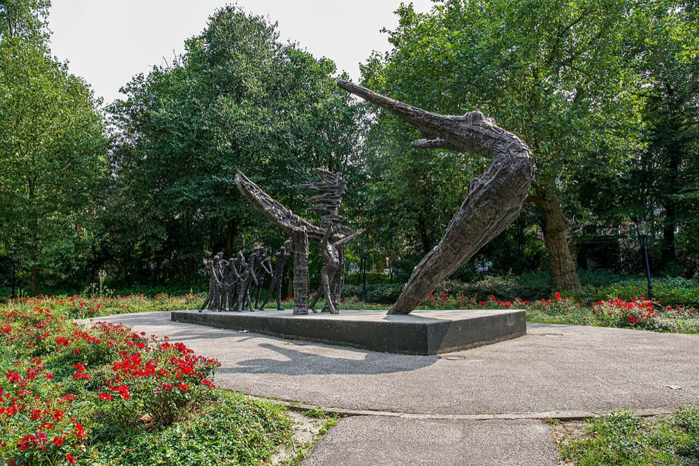
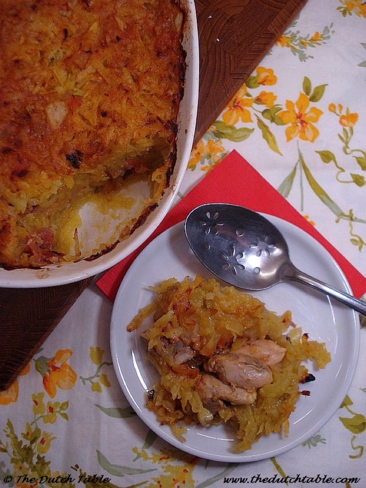
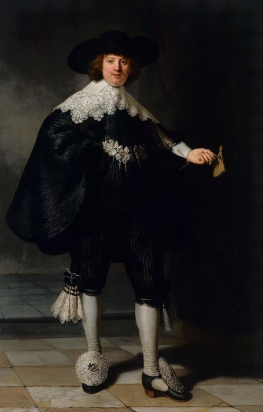
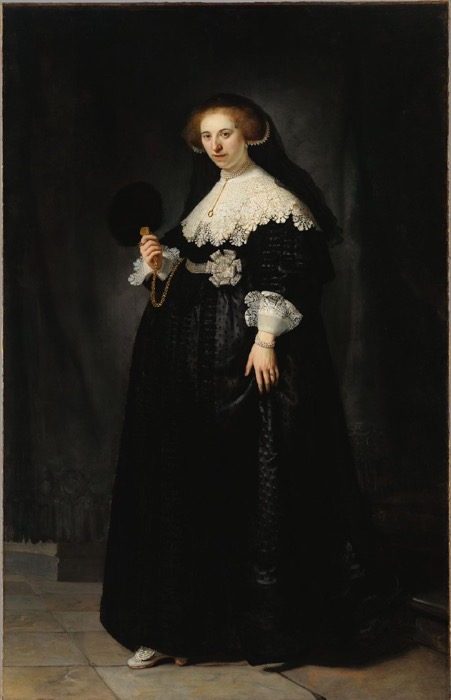
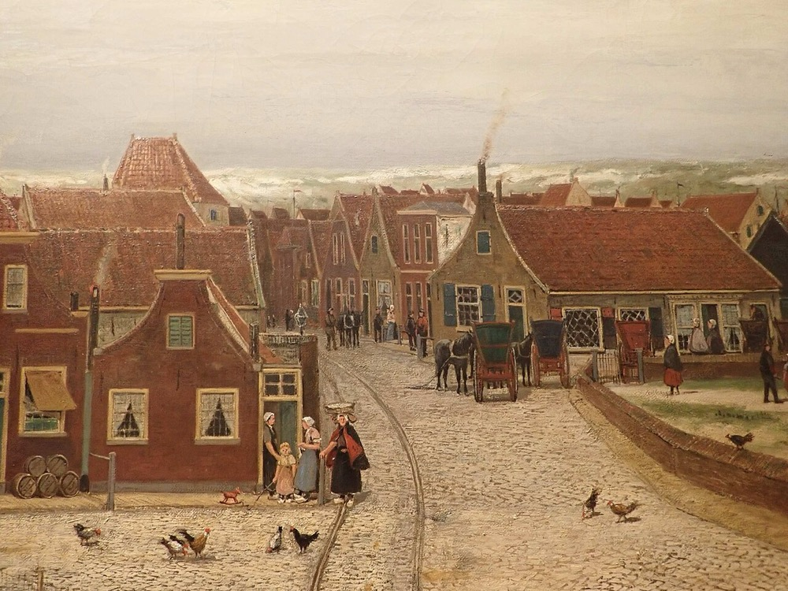
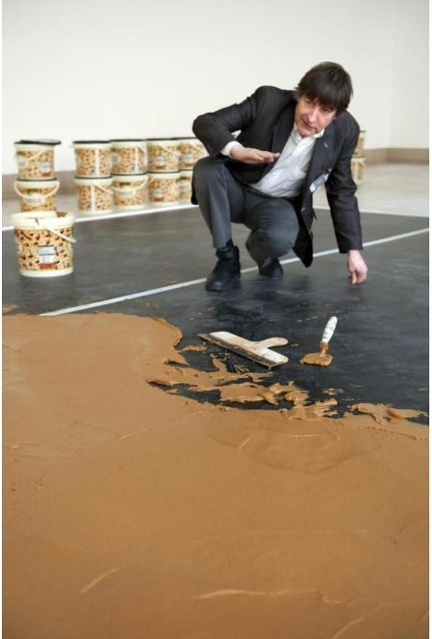

A letter from Tulp de Gid 🌷
Lieve Gelgotas, I am writing with every window thrown open and not a breath of air to show for it. The whole country is gasping. We have a heat wave, a proper one, code orange, and a nation built for drizzle has no earthly idea what to do with itself. The cafes have opened their doors as cooling rooms, everyone is the colour of a boiled prawn, and we are all secretly thrilled to finally have something to complain about. But I did not write to you only about the weather. This coming week the Netherlands stops to remember something hard and important, and I want to walk you through it gently, because it will be part of your year here too. Pour something cold and sit with me.
The big story
Keti Koti, the day the country looks its past in the eye
On the first of July, a Wednesday this year, the Netherlands marks Keti Koti, the anniversary of the day in 1863 when the Dutch abolished slavery in Suriname and the Caribbean colonies. I will not dress it up, my dears: this is a country that grew rich, in part, on the trade in enslaved people, and this is the day it remembers that, out loud.
There is a hard truth folded inside the date. Freedom on paper in 1863 was not freedom in fact, for the formerly enslaved were made to keep working under state control for another ten years, so true liberation came only in 1873. That is why the day holds grief and joy at once. It is marked in Amsterdam's Oosterpark, at the monument above, and opens with the Bigi Spikri, a brass band procession in traditional dress, before it turns into food, music, and warmth.
It is, officially, a young commemoration. Only in 2023 did our king, Willem-Alexander, stand in that park and apologise for the Dutch state's role in slavery. You are moving to a country still learning to hold its whole history at once, the glory and the shame together, and I think that is a good thing to arrive in the middle of.
 A few quick things, told quickly
A few quick things, told quicklyMind the strikes when you visit
Our new government, led by Rob Jetten, wants to trim some 6.8 billion euros from the welfare budget and to raise the retirement age faster, and the unions are having none of it. On the 23rd of June they walked out at rush hour, and the trains, trams, buses, and metros simply stopped for a few hours. Worth knowing for your visits: when the unions are cross, a morning of travel can vanish. Check before you set off.
Blame Harry Styles for the price of everything
Here is a story only a small country could produce. Our central bank worked out that when Harry Styles played his only shows on the European mainland here in Amsterdam, hotel prices leapt 21 percent and nudged the whole nation's inflation up to 3.5 percent. One handsome young man, an entire country's statistics. We are nothing if not easily moved.
Orange is winning, and made a little history
Our football team, the Oranje, is having a fine run at the World Cup over on your side of the ocean. They put five past Sweden, a 5 to 1 win that broke a record once held by Brazil, and there was a lovely first along the way: a Spanish referee, Marta Garcia, became the first woman ever to officiate a Netherlands men's World Cup match. By the time you arrive, you will know to wear orange without anyone telling you.
🌷 Tulp's Dutch Calendar Radar
Keti Koti comes to your own new city
And here is the part that will be yours. You will not need to go to Amsterdam for this. Right in The Hague, on the first of July from 13:00, there is a free Keti Koti festival called Kibra Kadena at Amare, the big cultural house in the centre of town. This year's theme is "Homegrown." There is music, spoken word, a market of Black-owned businesses, and, best of all, a shared meal called Heri Heri laid out free for anyone who comes. That is the Dutch way with a hard subject. You sit down at one long table, together, and you eat.
 Dish of the week
Dish of the week
Pom, the dish that means a celebration
Since the week belongs to Suriname, your kitchen should too. Pom is the great festive dish of the Surinamese-Dutch table, the thing that turns up at birthdays, at weddings, and yes, at Keti Koti. It is a deep baked casserole of chicken marinated in citrus, layered with a grated root called pomtajer until the top goes golden and a little crisp. It carries a history of its own, brought into Surinamese cooking by the Jewish community there. Make it once for a crowd and you will understand why, to a Surinamer, the word means a party is happening.
Artwork of the week

The faces of the money, painted by Rembrandt
To sit beside the week, two paintings that ask a quiet question. In 1634 a young Amsterdam couple, Marten Soolmans and Oopjen Coppit, had Rembrandt paint them at full length and life size, in black silk and rivers of lace, a grand format that until then had been kept for kings and queens. They were in their early twenties and very rich, Marten's fortune built on refining sugar. Look at the lace, the pearls, the careless glove in his hand, then remember where the sugar of that century came from, and at what cost. The pair now hang shared between the Rijksmuseum here and the Louvre, who bought them together for 160 million euros. Beautiful, and not innocent, both at once.
 The Hague & Scheveningen dispatch
The Hague & Scheveningen dispatch
A little heritage first, and it is a wonder. Tucked in the middle of The Hague is the Panorama Mesdag, the largest painting in the country, a circular canvas fourteen metres tall and a hundred and twenty around. You climb into a small pavilion and suddenly you are standing on a dune in 1881, the old fishing village of Scheveningen at your feet, the sea and the dunes wrapping all the way around you with no edges anywhere. The painter, Hendrik Willem Mesdag, lived right by the sea you are moving to. It is the closest thing to time travel your new neighbourhood offers.
For a warm afternoon indoors. There will be days, even this summer, when you want to be out of the sun, and the Kunstmuseum Den Haag, fifteen minutes from the coast, has a lovely thing running until September: a whole exhibition on love told through photographs, called "Can Love Be a Photograph." A good rainy-day plan, and I promise you there will be rainy days. Read more about the show →
My little pick for the week
Now, something gloriously silly, because we are not only a serious people. A museum in Rotterdam, the Boijmans van Beuningen, is about to spread a floor made entirely of peanut butter. A real one, 350 square metres of it, smooth and brown, walked around the edge of. It is a tribute to the artist who first made it, Wim T. Schippers, a beloved national prankster who died this month at 83, and who was also, wonderfully, the Dutch voice of Ernie, Kermit, and Count von Count on Sesame Street. We argue endlessly about whether the thing is art at all. That argument, my dears, is the most Dutch part of it.
On the family calendarAnd a glance, before I let you go, at what is coming for this little family of ours.
🌷 Tulp's question for the table
Here is something to turn over together this week, on your call or around the table.
One table, one tradition. Keti Koti is, at its heart, a day for sitting down together over one shared pot and talking honestly. So this: when you are all finally under one roof here, what is one tradition, a dish, a day, a small ritual, that you would like to make properly your own in the new country? Something to dream about together.
That is the letter, my dears. A heavy day of remembrance and a floor made of peanut butter in the same breath, which is about right for this place. I have my money on one of you being brave enough to attempt the pom for a crowd before the year is out.
Blijf koel, stay cool, and go and uitwaaien down at the water if it all gets to be too much.
Liefs, Tulp 🌷Tulp's parting shot
This is the beach at Scheveningen on a proper summer's day, the whole long strand of it running north toward the dunes. In a little while this is simply where you go on a warm evening. I will save you a spot on the sand.